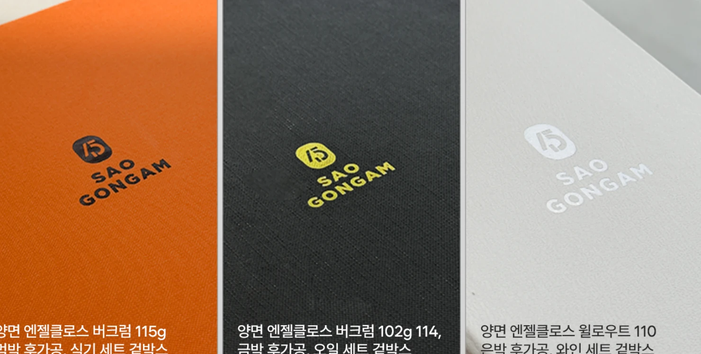
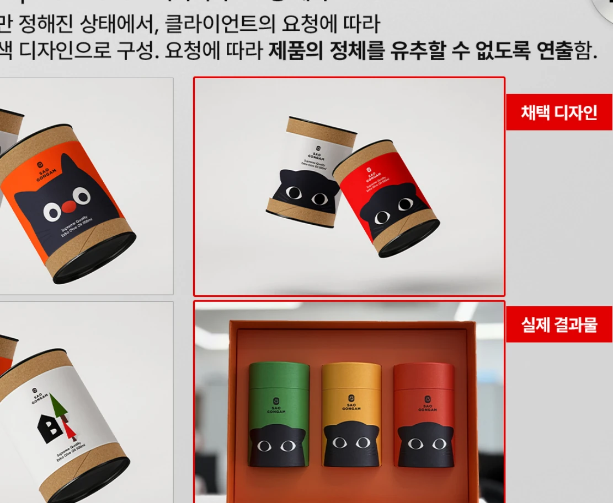
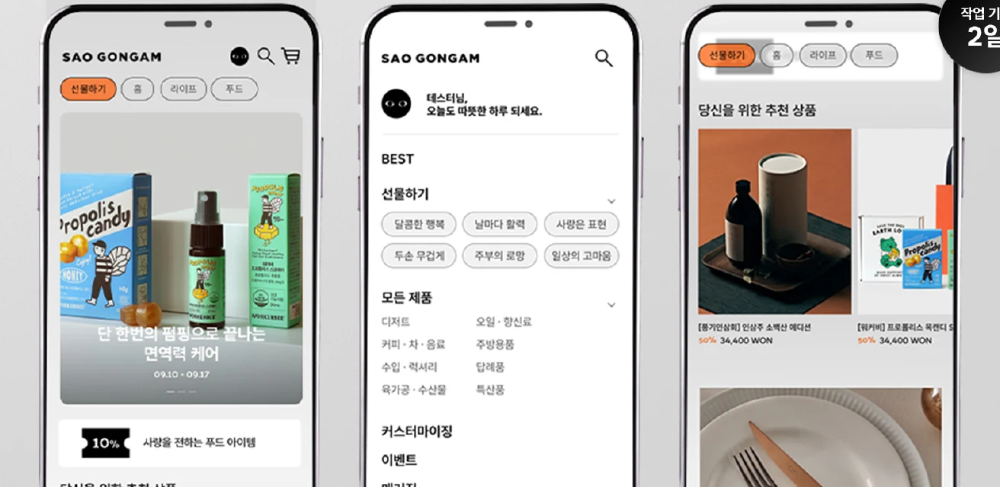

← BACK TO WORK
04 / PACKAGE DESIGN / APP UI
SAOGONGAM.
패키지 디자인부터 디지털 화면까지, 브랜드의 시각적 경험을 다양한 매체로 확장했습니다.

기존 포트폴리오에 수록된 실제 작업 이미지입니다. 온라인 게시용으로 PDF에서 추출한 이미지이며, 고화질 원본 교체를 권장합니다.
01 / CASE STUDY
Overview
싸오공감 브랜드의 패키지와 디지털 화면 제작 프로젝트입니다. 패키지별 색상과 재질에 관한 디자인을 진행하고, 실제 발주 및 시제품 제작을 경험했습니다.
PACKAGE DESIGNPRINT SUPERVISIONFIGMA UI DESIGN
02 / CASE STUDY
Challenge
제품군마다 서로 다른 개성을 유지하면서도 브랜드의 시각적 일관성이 드러나도록 패키지를 설계해야 했습니다.
03 / CASE STUDY
Approach
3종 패키지의 컬러 및 표면 표현을 구분하고, 실물 제작을 염두에 두고 소재·인쇄를 검토했습니다. Figma를 활용한 디지털 UI 화면 작업도 함께 진행했습니다.
04 / DESIGN OUTPUT싸오공감 패키지 3종 — 기존 포트폴리오 13페이지 패키지 시안 및 샘플 작업 — 기존 포트폴리오 14페이지 싸오공감 모바일 UI 디자인 — 기존 포트폴리오 11페이지
Selected visuals.


NEXT CASE STUDY / 01THE CLASS ↗